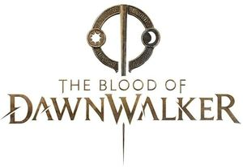

Trade Mark Journal No.2025/015 11 April 2025
WO0000001847031 (9,14,16,21,25,28,38,41,42,45)
Office of origin: European Union Intellectual Property Office (EUIPO)
Date of International Registration:13 December 2024
Date of designation in the UK:
13 December 2024

The mark contains the colour gold.
- Class 9
- Video games [computer games] in the form of computer programs recorded on data carriers; video games on disc [computer software]; downloadable computer games; computer gaming software; downloadable game software; computer game software, downloadable; computer game software for use on mobile devices; programs for computers; computer software, recorded; software; mobile apps; computer software applications, downloadable; electronic data carriers; magnetic data media; optical data media; magnetic data carriers bearing recorded software; optical data carriers bearing recorded software; data carriers for computers having software recorded thereon; compact discs [read-only memory]; DVDs; downloadable comics; electronic magazines; e-books; pre-recorded DVDs featuring games; software for smartphones; video films; downloadable digital music; optical discs featuring music; records [sound recordings]; compact discs featuring music.
- Class 14
- Jewellery; amulets [jewellery]; ornaments [jewellery, jewelry (Am.)]; pins [jewellery]; jewellery charms; personal jewellery; pendants; small jewelry boxes, not of precious metal; decorative articles [trinkets or jewellery] for personal use; works of art, decorations and sculptures made of precious or semi-precious metals or stones; works of art of precious metal; collectable coins; sew-on tags of precious metal for clothing; commemorative shields; dress ornaments in the nature of jewellery; decorative boxes made of precious metal; trophies made of precious metal alloys; key chains as jewellery [trinkets or fobs]; lanyards for keys; lockets [jewellery].
- Class 16
- Comics; writing instruments; posters; stickers [stationery]; printed matter; magazines in the fields of games and gaming; books; strategy guide books for computer games; rule books for playing games; strategy guide magazines for card games.
- Class 21
- Mugs; glasses, drinking vessels and barware.
- Class 25
- Clothing; shoes; hats; short-sleeved T-shirts; track jackets; coverups; sweat shirts; hooded tops; headscarves; dresses; gilets; waistcoats; kimonos; overalls; costumes; shirts; tank tops; sports shirts with short sleeves; printed t-shirts; tee-shirts; casual jackets; short trousers; men's and women's jackets, coats, trousers, vests; undershirts; gloves including those made of skin, hide or fur; socks; trousers; shorts; masquerade costumes; sweaters; shawls and headscarves; peaked caps; stocking caps; visors; waist belts.
- Class 28
- Table-top games; electronic board games; role playing games; compendiums of board games; video game consoles; hand-held game consoles; hand-held consoles for playing video games; automatic electronic games; joysticks for video games; controllers for game consoles; game controllers for computers; gaming keyboards; computer game joysticks; controllers for video game machines; video game apparatus; home video game machines; electronic games apparatus; computer game apparatus; puzzles; playing cards; toy figures; collectable toy figures.
- Class 38
- Broadcasting of motion picture films via the Internet; transmission of multimedia content via the Internet; telecommunication services provided via Internet platforms and portals.
- Class 41
- Provision of games by means of a computer based system; electronic games services provided from a computer database or by means of the internet; games services provided via computer networks and global communication networks; provision of non-downloadable games on the Internet; organization of electronic game competitions; provision of on-line computer games; electronic game services provided by means of the internet; video game services; providing on-line information in the field of computer gaming entertainment; providing online comic books, not downloadable; providing online non-downloadable comic books and graphic novels; organisation of training; arranging of conferences; providing information on-line relating to computer games and computer enhancements for games; entertainment services for matching users with computer games; production of cinematographic films; production of special effects for films; special effects animation services for film and video; production of entertainment in the form of a television series; production of television and cinema films; videotape production; production of sound and music recordings; providing films, not downloadable, via video-on-demand services.
- Class 42
- Development of video and computer games; design and development of computer game software; design of games; design of computer game software; design and development of video game software; advisory and consultancy services relating to computer and video games software; design and development of software in the field of mobile applications; research, development, design and upgrading of computer software; computer software development for others; design and development of virtual reality software; design of board-games; animation and special-effects design for others; smartphone software design.
- Class 45
- Licensing of computer games; licensing of computer software [legal services].
Rebel Wolves sp. z o.o.
Representative: Paweł Gutowski, Mokotowska 1 Zebra Tower VIII p., PL-00-640 Warszawa, POLAND